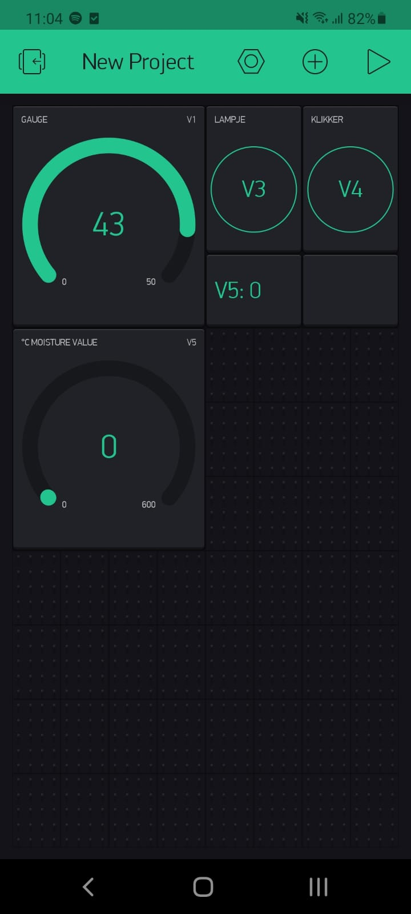
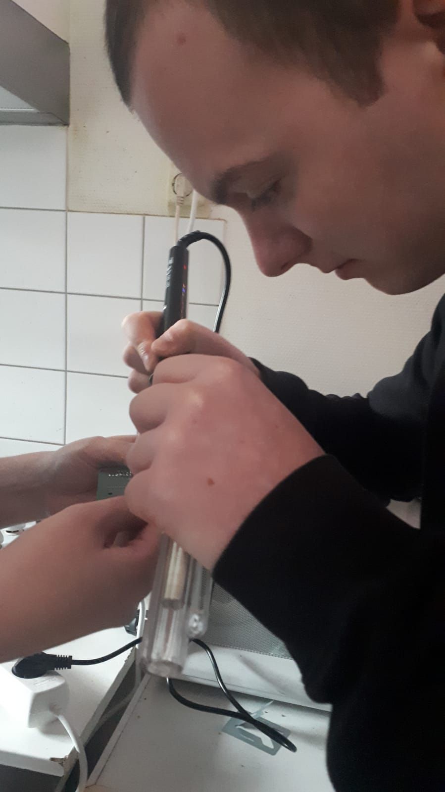

Altijd al een plant willen hebben, alleen je bent bang dat je deze vergeet water te geven waardoor die sterft? Of zou je het niet vergeten, maar heb je er gewoon absoluut geen zin in? Helaas ken ik de problemen (ik denk dat ik ze vergeet water te geven omdat ik er geen zin in heb). Tijdens de smart topic Technology leerde wij hoe wij een automatisch wateringssysteem kunnen bouwen om dit probleem op te lossen!
In eerste instantie klinkt dit natuurlijk hartstikke makkelijk, althans, voor mij. Je plaatst toch gewoon een sensor in de grond die het waterniveau meet met een waarde waarna er automatisch water wordt gegeven? In theorie wel. Maar in de praktijk kwam hier natuurlijk veel meer bij kijken.
Les 1: Verkennen
Gedurende de eerste les zijn wij bezig geweest met het leren van de hardware en software. Met een mooi
aangeleverd bakje draadjes, een ‘ESP32’ en nog wat andere componenten, was het aan ons de taak om een
beetje wijs te maken uit het hele gebeuren. Het doel? Het laten knipperen van een LED lampje.
Les 2: Vochtmeter
Tijdens de tweede les heb ik geleerd hoe ik de bijgeleverde vochtmeter aan de praat kreeg. Op de
afbeelding is te zien dat hier relatief wat gepuzzel voor nodig was om dit voor elkaar te krijgen. Ik
heb hier geleerd dat het schrijven van bijbehorende code toch wat moeilijker was dan ik dacht. Zo was ik
eens een stukje code vergeten waardoor niets meer werkte, en had ik ergens een waarde te laag gezet
waardoor mijn ‘klikker’ (dat blauwe blokje met rood plaatje op de foto) op hol sloeg. Na een paar
minuten met een fronsend gezicht te onderzoeken waar het mis ging, vond ik het probleem en heb ik het
daadwerkelijk werkend gekregen.
Les 3-4: Dashboard Blynk app
Wat zou een smart industry zijn zonder digitaal te kunnen sturen. Nu de sensoren op mijn ESP32 werken
werd het tijd deze digitaal aan te sturen. Dat deed ik aan de hand van de Blynk app. Door mijn code
dusdanig te schrijven dat deze gegevens ophaalt uit mijn app, kreeg ik de mogelijkheid om vochtigheid te
lezen vanaf mijn telefoon en het LED lampje aan te zetten op afstand.
Erg handig wanneer ik niet bij mijn plant in de buurt ben maar toch wil weten of alles goed gaat.
Les 5: PCB ontwerpen
Op de afbeelding van les twee is te zien dat het best een rommeltje kan worden wanneer er veel kabeltjes
aangesloten moeten worden. Deze kabeltjes kunnen hierdoor loslaten of zelfs beschadigd raken. Om dit
probleem op te lossen heb ik de PCB laten produceren in China. Vóór dit geproduceerd werd, moest ik
natuurlijk eerst het ontwerp maken. Dit werd gedaan met het programma Eagle. Binnen Eagle heb je de
mogelijkheid om het ontwerp uit te tekenen en vorm te geven. Mijn ontwerp en vormgeving is te zien op
bovenstaande afbeeldingen. Vervolgens kreeg ik de daadwerkelijk ontwikkelde PCB in de post thuis
geleverd.
Ontwerpen wateringssysteem
Het moment waar ik naar heb gewerkt. Het daadwerkelijk in elkaar zetten van het plant wateringssysteem.
Samen met Eline en Mirja ben ik gaan solderen. Dit was een leuk maar vooral moeilijk proces omdat het
echt belangrijk is dat het juist wordt gedaan; zo mag je bijvoorbeeld niet hebben dat het tin aan elkaar
verbonden is omdat je dan kans hebt op kortsluiting.
Toen dit voor elkaar was werd het tijd om de code nogmaals te runnen maar dan met de juiste componenten op de juiste plek. Op onderstaande video is te zien dat dit is gelukt. Het doel van het wateringssysteem was dat de vochtsensor meet wanneer de waarde onder een bepaalde threshhold komt waarna de pomp aan gaat en water van een bakje naar de plant gaat. Om dit te demonstreren heb ik het buisje in een ander bakje gedaan. Zoals op het filmpje te zien is, wordt na het activeren van de code een te lage threshhold gemeten waarna het pompje inderdaad aan gaat. Aan het einde van het filmpje is een klik te horen en een lampje te zien. Dit is een indicatie dat het pompje stopt met water geven omdat de vochtmeter voldoende water aangaf.
Reflectie
Dit project was ver buiten mijn kennisgebied. Nog nooit heb ik iets moeten solderen, in Eagle moeten
ontwerpen of met dergelijke hardware te werken. Het was al met al een erg leuk project en ik heb er veel
van geleerd, bijvoorbeeld dat het héél belangrijk is dat de code correct is omdat een kleine fout de
hele code plat kan leggen (heeft mij veel hoofdpijn opgeleverd). Ook heb ik gezien dat je (met de juiste
kennis) best gemakkelijk en erg leuk van alles kunt maken. Wellicht dat ik dit in de toekomst met andere
ideeën ga proberen.